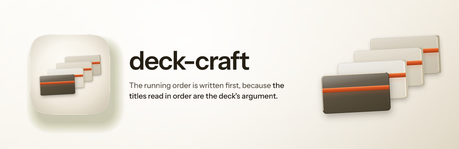
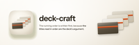
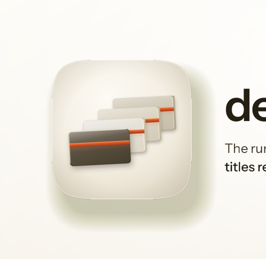

Every size a person actually meets this banner at, then the 12-point rubric. Delivery bar is 10 of 12 with checks 1, 2, 3, 7 and 12 non-negotiable. 5 of 5 mechanical checks pass and 7 still need a human verdict, which is what the renders above are for.



| # | Check | Verdict | Evidence |
|---|---|---|---|
| 1 | Exactly 3200x1040, from a 1600x520 layout at deviceScaleFactor 2 (non-negotiable) | pass | 3200x1040 |
| 2 | The plugin's real icon asset, referenced rather than redrawn (non-negotiable) | pass | 1 artwork reference inlined as a data URI, which is how a file:// render loads it at all |
| 3 | The wordmark is set in a linked web font, not a local system face (non-negotiable) | pass | loads Instrument Sans |
| 4 | Ground register agrees with the icon it sits beside | — | judged by eye on the renders above; fill this in |
| 5 | One warm accent, carried from the icon's own accent constant | — | judged by eye on the renders above; fill this in |
| 6 | Composition derived from the icon's build script, not eyeballed from a sibling | — | judged by eye on the renders above; fill this in |
| 7 | One essence line, no em dash (non-negotiable) | pass | no em dash in the copy |
| 8 | Nothing overflows the frame | — | judged by eye on the renders above; fill this in |
| 9 | Wordmark and essence line both legible at 900px | — | judged by eye on the renders above; fill this in |
| 10 | Wordmark legible at 400px | — | judged by eye on the renders above; fill this in |
| 11 | No element illegibly overlapping another | — | judged by eye on the renders above; fill this in |
| 12 | banner-src retained, so the banner stays editable (non-negotiable) | pass | banner-src.html |
5 / 12
**Ships.** Every plate comes out of `build_icon.py`'s own `rounded()` against a `Spec` whose lengths are the icon's scaled by one factor of 0.53, so `PLATE_ASPECT` still cuts each plate to the same 16:9 stage, `step_x` 112 and `step_y` 76 still carry the sequence, `tilt` -3 still tips the whole deck, and `PLATE_FACES` still runs the leading plate as warm graphite gel with the rest receding in frosted porcelain one value step flatter each time. The title band is `rule_top` 0.335 and `rule_h` 0.115 of the plate height on every single face, with the same `ACCENT_HI` lip and the same warm bloom beneath it, so the climb front to back is the running order rather than a decoration that happens to repeat. Both cast filters, the translucency, the seat edge and the light catch on the top and left edges only are the icon's. Ground at 152 degrees from `LIGHT_ANGLE_DEG` 118.
**Known liabilities.** The porcelain plates sit on a porcelain ground and separate only by their seat edge, their cast and about one value step, so the furthest plate's top right corner is faint at 900px and effectively gone by 400px. The deck therefore reads as three plates rather than four on a catalogue card, and `n_plates` is a named constant that the banner quietly under-reports. Enlarging the device or darkening the rear plate would fix it and would both break the value order that keeps the sequence legible in grayscale, so it stands. Second, at 200px the four plates merge into one stepped block and the three rear bands read as a single dashed line; the climb survives as a shape but the four separate title marks do not. Third, nothing but the plates' proportion says 16:9, so the one contract deck-craft treats as binding is present in the geometry and invisible as a claim.
**Deliberate absences.** No accent rule under the wordmark, and no mono annotation: this device's argument is a sequence rather than a measurement, and a fifth accent band next to the type would dilute the one-mark-per-plate rule the artwork is performing. The tile's inner rim light is not carried, there being no tile. Verified by eye rather than by assertion: the tilt renders clean, with none of the tile seams a rotated CSS box produces on this engine, which is why the deck is SVG at all; and the leading plate's band is the brightest thing on the banner at every size down to 200px, which is what keeps the eye on the plate you are on.